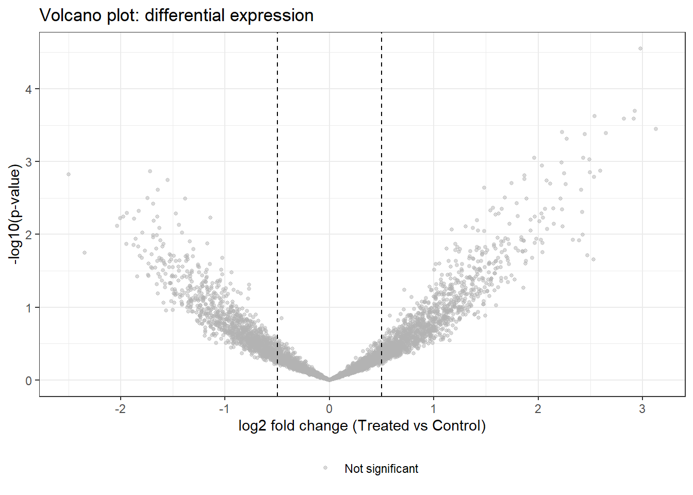

You run a transcriptomics experiment: 20,000 genes measured in 10 treated and 10 control mouse liver samples. You want to find which genes are differentially expressed. Applying 20,000 t-tests would generate ~1,000 false positives by chance alone. Omics statistics solves the multiple testing problem, borrows information across genes to stabilise variance estimates, and ranks results by a combination of effect size and significance.
26.2 Learning Objectives
After completing this session you will be able to:
Explain why multiple testing requires correction and apply FDR methods
Use limma or DESeq2 to analyse differential expression
Interpret volcano plots and MA plots
Perform pathway enrichment analysis with clusterProfiler
Understand the key differences between bulk RNA-seq, microarray, and proteomics analysis workflows
26.3 Background: The Multiple Testing Problem
26.3.1 Why Ordinary p-values Fail at Scale
With \(m = 20,000\) tests and \(\alpha = 0.05\), the expected number of false positives is \(0.05 \times 20,000 = 1,000\) even when no gene is truly differentially expressed. The family-wise error rate (FWER) controls the probability of any false positive: Bonferroni correction sets \(\alpha^* = 0.05 / m\). This is very conservative for omics.
The false discovery rate (FDR) controls the proportion of discoveries that are false positives ? a more powerful approach for exploratory omics. The Benjamini-Hochberg (BH) procedure adjusts p-values to q-values: a q-value of 0.05 means 5% of genes called significant at that threshold are expected to be false positives.
\[\text{q-value}_i = \frac{p_{(i)} \cdot m}{i}\]
(where \(p_{(i)}\) are p-values sorted ascending and \(m\) is total tests).
26.3.2 Moderated Tests in Genomics
With small sample sizes (n = 3?6 per group), gene-wise variance estimates are noisy. limma (microarray/RNA-seq) and DESeq2 (RNA-seq counts) stabilise variance estimates by: - Empirical Bayes shrinkage: Borrowing information across genes to shrink each gene’s variance toward a common prior - Negative binomial model (DESeq2): Accounting for overdispersion in count data
This produces more powerful and stable differential expression (DE) calls than simple t-tests.
26.4 Example 1: Simulated RNA-seq Differential Expression
We simulate a count matrix and apply a limma-voom workflow.
set.seed(2024)n_genes <-5000n_samples <-20# 10 treated, 10 control# Simulate log2 expression (microarray-style for simplicity)group <-factor(rep(c("Control", "Treated"), each =10))# ~200 genes truly DE with effect size 1 log2 unittrue_de <-sample(n_genes, 200)effect_size <-rep(0, n_genes)effect_size[true_de] <-rnorm(200, mean =1, sd =0.5)# Expression matrix: genes x samplesexpr <-matrix(rnorm(n_genes * n_samples, mean =8, sd =1.5),nrow = n_genes)# Add treatment effect for DE genesexpr[true_de, group =="Treated"] <- expr[true_de, group =="Treated"] + effect_size[true_de]rownames(expr) <-paste0("Gene_", seq_len(n_genes))cat("Expression matrix:", nrow(expr), "genes x", ncol(expr), "samples\n")
Expression matrix: 5000 genes x 20 samples
26.4.1 Simple t-test (naive approach)
# 5000 independent t-testspvals_naive <-apply(expr, 1, function(x) {t.test(x[group =="Treated"], x[group =="Control"])$p.value})# How many significant at p < 0.05?cat("Significant at p < 0.05 (uncorrected):", sum(pvals_naive <0.05), "\n")
Warning in max(pvals_naive[qvals < 0.05]): no non-missing arguments to max;
returning -Inf
Warning in list2(...): NaNs produced
Warning: Removed 1 row containing missing values or values outside the scale range
(`geom_hline()`).

26.5 Example 2: Limma Workflow (Empirical Bayes)
library(limma)# Design matrixdesign <-model.matrix(~ group)# Fit linear model per genefit <-lmFit(expr, design)fit2 <-eBayes(fit) # empirical Bayes moderation# Extract top DE genestop_genes <-topTable(fit2, coef ="groupTreated", n =Inf, sort.by ="P") %>% tibble::rownames_to_column("gene") %>%as_tibble()head(top_genes, 10)
Comparing naive t-test vs limma: The limma moderated t-statistics are more stable for genes with low expression variance, and the eBayes step improves ranking of true positives.
26.6 Example 3: Pathway Enrichment
Once you have a gene list, the next question is: which biological pathways are enriched?
Gene Set Enrichment Analysis (GSEA): Instead of a binary DE/non-DE split, GSEA uses the full ranked gene list to test whether genes in a pathway tend to be up- or down-regulated.
Bioconductor:BiocManager::install("GEOquery") to download GEO datasets directly into R.
pasilla and airway packages: Standard RNA-seq benchmark datasets included with Bioconductor ? used in DESeq2 and edgeR vignettes.
curatedMetagenomicData: Processed microbiome datasets ready for R analysis.
26.8 What Can Go Wrong
Batch effects Technical variation from different sequencing runs, plates, or RNA extraction batches can dominate biological signal. Visualise PCA before and after correction. Use ComBat (from sva) or include batch as a covariate in the design matrix.
Ignoring library size normalisation Raw counts differ between samples due to sequencing depth. Always normalise (TMM in edgeR, DESeq2 size factors, or CPM) before comparing samples.
Using fold change alone A 10-fold change is meaningless if expression is near-zero in both groups (high noise, low absolute levels). Always report both fold change and significance. Filter low-expression genes before analysis.
Misinterpreting enrichment results ORA depends on the gene universe (background). If you use all measured genes as universe, results are more stringent than if you use only protein-coding genes. Report your universe and software version.
26.9 Exercises
26.9.1 Exercise 1 (Guided): FDR Simulation
Simulate 10,000 independent t-tests where the null is true for all genes (rnorm both groups with same mean).
Count how many are significant at p < 0.05.
Apply BH correction. How many survive FDR < 5%?
Repeat with 500 truly DE genes (mean shift = 1 in treated). What is the sensitivity and FDR of the BH-corrected calls?
Exercise 1: Solution
set.seed(2024)m <-10000n <-10# samples per groupm_de <-500# true positives# Simulatectrl <-matrix(rnorm(m * n, 0, 1), m, n)trt <-matrix(rnorm(m * n, 0, 1), m, n)trt[1:m_de, ] <- trt[1:m_de, ] +1# true DEpv <-sapply(seq_len(m), function(i) t.test(trt[i,], ctrl[i,])$p.value)qv <-p.adjust(pv, "BH")cat("Sig at p < 0.05 (uncorrected):", sum(pv <0.05), "\n")
Download a public RNA-seq dataset from GEO using GEOquery (e.g., GSE93819 ? mouse liver after high-fat diet). Apply a full differential expression workflow:
Download and load the data.
Filter low-expression genes (at least 10 counts in at least 3 samples).
Normalise with DESeq2 or edgeR.
Run DE analysis.
Produce a volcano plot and report the top 20 DE genes.
Perform Gene Ontology enrichment and interpret the biological pathways.
26.10 Comprehension Check
You run 15,000 t-tests and apply Bonferroni correction. Three genes remain significant. A colleague says this is “too conservative” for omics. What is the alternative, and what does it control?
A gene has fold change = 8 and p = 0.8. Should you report it as significant?
PCA of your RNA-seq samples shows two clear clusters that match the sequencing batch, not the biological groups. What is the problem, and how do you fix it?
Your enrichment analysis returns “ribosome biogenesis” as the top pathway. Is this a meaningful result?
A paper reports 2,000 DE genes at FDR < 5%. What does this mean about the likely number of false positives in their list?
Answers
The Bonferroni correction controls the family-wise error rate (FWER) ? the probability that any test produces a false positive. For omics, this is very conservative and has low power. The alternative is the false discovery rate (FDR), controlled by the Benjamini-Hochberg procedure. FDR allows a small proportion of false positives among significant results (e.g., 5% FDR means ~5% of called DE genes are expected to be false positives). BH is more powerful and more appropriate for exploratory omics analyses.
No. p = 0.8 means the fold change is not statistically distinguishable from noise with the available sample size. A large fold change with a non-significant p-value typically reflects low statistical power ? either the gene is highly variable or the sample size is too small. Report both fold change and significance; do not highlight genes that are not statistically significant.
This is a batch effect ? technical variation from sequencing batches dominates the biological signal. Without correction, any DE analysis will be confounded: genes that vary between batches will appear differentially expressed between biological groups if batches are correlated with groups. Fixes: (1) include batch as a covariate in the design matrix (~ batch + group); (2) apply ComBat batch correction if groups are not perfectly confounded with batches; (3) if batches are perfectly confounded with groups, the study is uninterpretable and must be repeated.
Ribosome biogenesis appearing as the top pathway may be meaningful (rapidly proliferating treated cells produce more ribosomes) or may be an artefact (ribosomal genes are often highly expressed and variable, dominating enrichment analyses). Check: are ribosomal genes actually in your DE gene list, or are they just abundant in your background? Consider removing ribosomal genes from the universe or interpreting with caution.
At FDR 5%, approximately 5% ? 2000 = 100 genes in the list are expected to be false positives. The FDR is a statement about the long-run proportion of false positives among discoveries, not a guarantee about this specific list. Importantly, the FDR does not indicate the direction or magnitude of effects ? the 1,900 true positives may range widely in effect size, and many may be biologically trivial despite statistical significance.
26.11 How to Report
Reporting Omics Statistics Results
In a Methods section:
“Differential expression analysis was performed using limma/DESeq2 (cite). Genes with an FDR-adjusted p-value < 0.05 and |log₂ fold-change| ≥ 1 were considered differentially expressed. Multiple testing correction used the Benjamini–Hochberg method.”
In a Results section:
“Of XXXX genes tested, XXX were significantly differentially expressed (FDR < 0.05, |log₂FC| ≥ 1): XXX up-regulated and XXX down-regulated in [condition A] relative to [condition B].”
Always report: - The statistical method and R package with version - The FDR threshold used (and why, if not 0.05) - Both the statistical threshold (FDR) and the biological threshold (fold-change cutoff) - Number of features tested (important for interpreting multiple testing correction)
Common reporting errors: - Reporting raw (unadjusted) p-values without FDR correction in a high-throughput analysis - Using an FDR threshold of 0.1 or 0.2 without acknowledging the higher false positive rate - Treating an FDR-adjusted p-value as if it were a Bonferroni-corrected p-value - Omitting the fold-change threshold — statistical significance alone does not imply biological relevance
26.12 Further Reading
Ritchie et al. (2015) — limma powers differential expression analyses for RNA-sequencing and microarray studies (NAR)
Love, Huber, and Anders (2014) — DESeq2: moderated estimation of fold change and dispersion for RNA-seq data (Genome Biology)
Benjamini and Hochberg (1995) — Controlling the False Discovery Rate (JRSS-B ? the original BH paper)
Benjamini, Yoav, and Yosef Hochberg. 1995. “Controlling the False Discovery Rate: A Practical and Powerful Approach to Multiple Testing.”Journal of the Royal Statistical Society: Series B 57 (1): 289–300.
Love, Michael I., Wolfgang Huber, and Simon Anders. 2014. “Moderated Estimation of Fold Change and Dispersion for RNA-Seq Data with DESeq2.”Genome Biology 15: 550.
Ritchie, Matthew E., Belinda Phipson, Di Wu, Yifang Hu, Charity W. Law, Wei Shi, and Gordon K. Smyth. 2015. “Limma Powers Differential Expression Analyses for RNA-Sequencing and Microarray Studies.”Nucleic Acids Research 43 (7): e47.